|
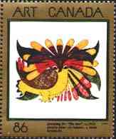 |
by Pierre-Yves Pelletier, designer |
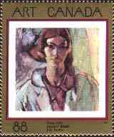 |
The annual Masterpieces of Canadian Art series, begun in 1988, was
originally intended to be an only five-stamps set. Although it was popular
with the stamps' collectors and the art community, it was not very
appreciated by the general population, particularly at the beginning.
The reason was that these stamps, which measures 40mm x
49mm, were found to big to be put on the usual envelopes. Another reason
why they were unpopular was that they did not pay any particular postal
rate. It was not until the second series was issued in 1993 that the
stamps had finally a rate to pay.
Tip: Point on the images with the mouse index to get
more information about the works of of art displayed.
|
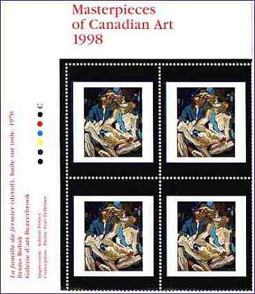 |
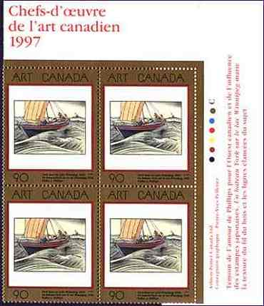 |
Canada Post's definition of art for this series of stamps is not limited to paintings. Some of them show lithographs, sculptures or artifacts that are part of the Canadian heritage. The designs in the series have been very consistent. The design concept of all these stamps has been the responsibility of Mr. Pierre-Yves Pelletier from Montreal.
|
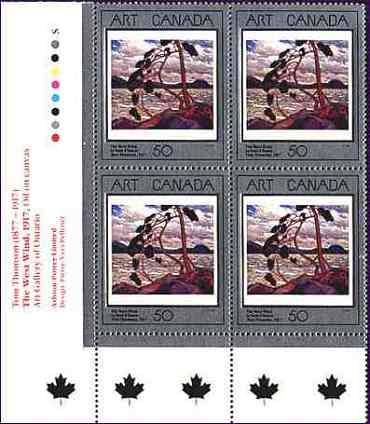 |
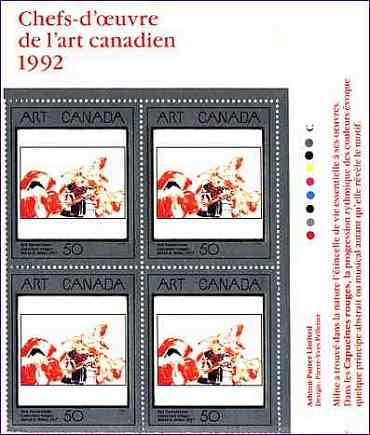 |
The first five stamps had a thin black frame cutting through the silver frame (see aboove, on the left). This frame was removed starting in 1993. All the stamps have all been issued in panes of 16 (4x4). For space reasons, I show above only quarters of them. The top margin of the pane shows the title of the series and the year of issue; the left and right margins name the art, its artist and the location of the original as well as printing information and color dots (also known as traffic lights). The bottom margin shows a row of ten Maple Leafs in the color of the foil.
|
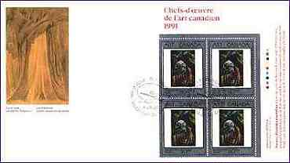 |
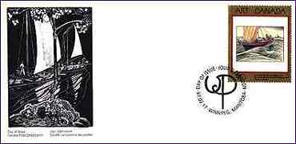 |
All the text is written in Canada's two official languages: English and French. After every five stamps the foil overlay has been changed. The first five were bordered in silver, the next five in gold and the series started in 1998 in platinum. Only one major variety was reported on the 11 stamps issued prior to this year. It appears on the 1994 Vera by Frederic Varley (see the stamp on the top of the page, on the right). Two sheets of 16 bearing a major shift of the gold foil were found. The gold has moved halfway up the stamps and covers Vera's neck and chest while leaving the top and bottom of the stamp missing the gold color. Each stamps was accompanied by two FDCs, one with only one the stamp and another with a block of four stamps on them (see above). The four stamps FDCs are quite big, measuring 243mm x 140mm. All FDCs depict on the left in a cachet a work of the featured artist. |
|
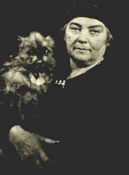 |
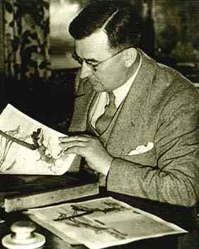 |
The back face of the FDCs is also very interesting. It speaks, in English and French, about the artist, about the displayed work and about the cachet. The examples above, related to the two FDCs presented earlier, display the pictures of the artists Emily Carr (1871-1945) and Walter Joseph Phillips (1884-1963).
|
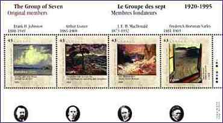 |
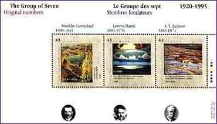 |
The two souvenir sheets displayed above don't belong to the Canadian Arts Series. They commemorate the Group of Seven artists who profoundly influenced the Canadian art and are given here as an example for other Canadian stamps dedicated to arts. Emily Carr, in her work Forest, British Columbia, shown above on a stamp, was influenced in her work by the painter Lawren Harris, one of the members of the Group of Seven.
Text (adapted)
after: Charles J.C. Verge.
The Masterpieces of Canadian Art Series. Scott Stamp Monthly, July 1999, p.
42-43.
Background: a view from Canada.
Link: Jean Paul Lemieux